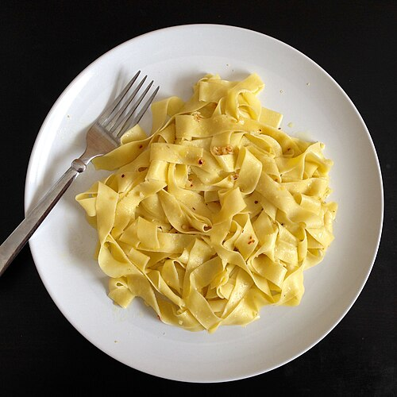

Pasta is a type of food typically made from an unleavened dough of wheat flour mixed with water or eggs, and formed into sheets or other shapes, then cooked by boiling or baking. Pasta was originally only made with durum, although the definition has been expanded to include alternatives for a gluten-free diet, such as rice flour, or legumes such as beans or lentils. Pasta is believed to have developed independently in Italy and is a staple food of Italian cuisine, with evidence of Etruscans making pasta as early as 400 BCE in Italy.
Gather all ingredients.
Bring a large pot of lightly salted water to a boil. Add pasta and cook until al dente, 8 to 10 minutes; drain.
Heat oil in a large skillet over medium heat. Sauté garlic until tender.
Stir in chicken and season with red pepper flakes. Cook until chicken is golden and cooked through.
Combine pasta, chicken, pesto, and sun-dried tomatoes in a large bowl; toss to coat evenly.
Thank you for using this recipe!
Find more recipes here